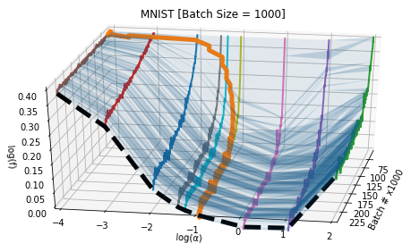
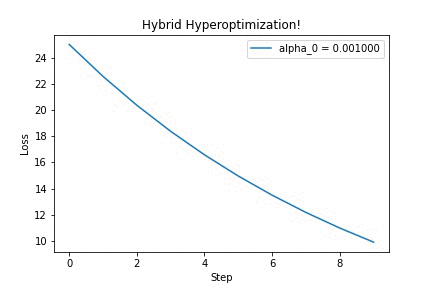

Hybrid Hyperoptimization
The most ambitious crossover event in automatic differentiation history
Friday, September 11, 2020 · 4 min read
Summary of this post: It turns out that by carefully mixing forward-mode and reverse-mode automatic differentiation, you can greatly simplify certain hyperparameter optimization algorithms.
Here’s a fun recursive idea: just like how we optimize the parameters of machine learning models by gradient descent, we can also their hyperparameters by gradient descent. This is by no means a new idea; you can find 20-year-old papers that discuss (for example) optimizing gradient descent step sizes by gradient descent itself.
Broadly, there are two ways to do this. The “short-term” way is to take a single step of gradient descent, and then based on how that goes, adjust the hyperparameters. That’s the premise of the 2018 paper Online Learning Rate Adaptation with Hypergradient Descent: it turns out that you can do this in an extremely lightweight way. You would hope that over time the hyperparameters converge to something optimal alongside the parameters (and indeed that is the case, though you have to be careful).
The “long-term” way is to train several steps and then backpropagate through the entire training to adjust the hyperparameters. The hope is that this provides a stronger “signal” to the hyperparameter-gradient, which is better for convergence. But, this comes at the (tremendous) expense of having to store a copy of the entire computation graph for several steps of training, and then backpropagate through it. If your model has 1GB of parameters, you need to store ~1GB worth of numbers for each step. You can imagine that adds up over the course of many epochs, and so the algorithm is severely limited by how much RAM you have.
The 2015 paper Gradient-based Hyperparameter Optimization through Reversible Learning makes this work by throwing away the intermediate steps of the computation graph and then JIT-re-computing it “in reverse” during backpropagation. It’s a clever technique, but kind of hairy and hard to implement (you have to be super careful about numerical precision).
Here’s a graph that visualizes these two techniques (from this paper). You’re looking at several parallel loss curves (($\log(f)$) is the loss plotted on a log scale), pointing towards you, arranged in order of the “step size” hyperparameter (that’s ($\log(\alpha)$)). The orange curve represents a “short-term” hyperparameter optimization, which is allowed to move along the “step size” axis at each step. The “long-term” hyperparameter optimization instead optimizes directly on the thick black dashed “U” — that is, after several steps of training. You can see how the latter is smoother, but also much harder to compute.

To summarize: the short-term way is cheap but noisy. The long-term way is expensive but less noisy. Can we get the best of both worlds?
Well, let’s think more carefully about the source of the expense. The problem is that we need to store (or be able to reconstruct) the full computation graph in order to do backpropagation. Okay, but do we really need to do backpropagation? The only reason we backpropagate is that it’s more efficient in the case when you want derivatives with respect to many different variables. If you have millions of model parameters, backpropagation is millions of times faster than the much simpler forward-mode (“dual numbers”) automatic differentiation.
But we don’t have millions of hyperparameters! Step size, for example, is just a single number. The Adam optimizer only has a total of 4 hyperparameters. With this in mind, backpropagation isn’t even the right choice — we should be using dual numbers for the hyperparameter optimization. On the other hand, we should still be using backpropagation for the “inner loop” that optimizes the (non-hyper-) parameters. That is, we want to do something like this:
initialize hyperparameters
# loop to optimize hyperparameters
while True:
initialize parameters
# loop to optimize parameters
for i in range(100):
run model on data to get loss
# using reverse-mode!
compute d(loss) / d(parameters)
update parameters using hyperparameters
# using forward-mode
compute d(loss) / d(hyperparameters)
update hyperparameters
This raises a logistical question: how do we reconcile these two automatic
differentiation algorithms in the same program? The “trick” is to “thread”
dual numbers through a backpropagation implementation. In other words,
implement backpropagation as usual, but rather than float type numbers,
exclusively use dual_number type numbers (even when doing derivative
calculations). Initialize the system such that the dual numbers track
derivatives with respect to the hyperparameters you care about. Then, your
final loss value’s attached ($\epsilon$)-value immediately gives you
d(loss)/d(hyperparameters). No backpropagation needed — and so, it’s safe
to “forget” the computation graph.
That’s it! That’s all I wanted to share in this blog post! :)
Of course, it’s not obvious how to implement this in PyTorch, since you can’t
naïvely do tensor(dtype=dual_number). Rather than hack in a custom numeric
data type that implemented dual numbers, I wrote my own tiny implementations of
forward- and reverse-mode automatic differentiation. It’s just a couple dozen
(very-recognizable-to-automatic-differentiation-enthusiasts) lines of code. I
was careful to make each implementation generic in the kind of “number” it
accepts. That allowed me to run the reverse-mode algorithms using the
forward-mode data types.
Running it on a simple quadratic optimization problem, we can see that updating the hyperparameter ($\alpha$) yields better-looking loss curves — in this GIF, we’re discovering that we should increase the step size. Yay!

I think this is a very neat trick, which surely has other cool applications (for example, differentiating through long-running physics simulations!). If you’re curious, check out this IPython notebook for the full source code. Feel free to adapt it to your ideas. Then, tell me what you’ve built!